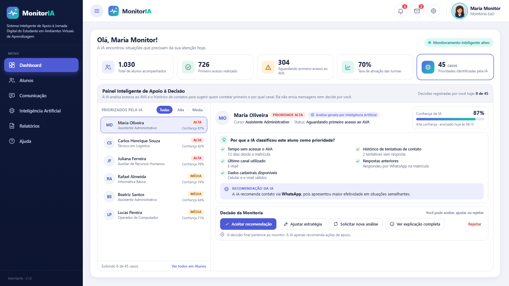
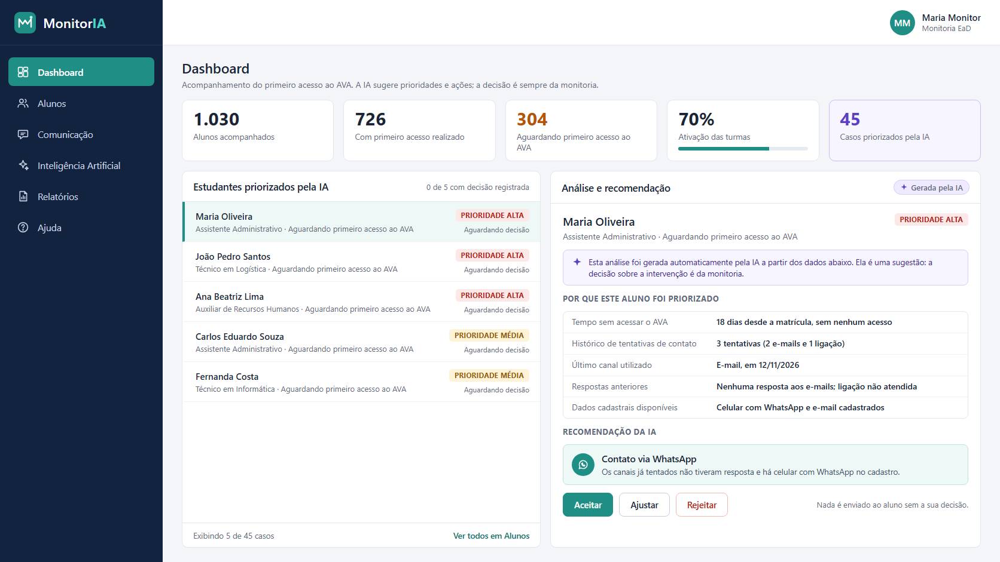

MonitorIA - protótipos navegáveis
NP2 - Engenharia de Prompts para Geração de Interfaces (PPGIA - Unifor - Aplicações em IHC, 2026.2). Três cenários com diferentes níveis de explicitação de IHC nos prompts. Os cenários B e C foram gerados com Claude Fable 5.2, cada um com Frame Master, Dashboard, Alunos e Relatórios. Use o menu lateral para navegar entre as telas. Todos os dados são fictícios.
A - Baseline
Protótipo original, gerado com o Prompt Baseline
B - Intermediário
Prompt Baseline sem as 6 especificações complementares (23/11/2026)
C - Mínimo
Só as especificações essenciais e informações básicas sobre problema, público e finalidade (19/11/2026)Melhorias propostas
Fora da comparação entre os cenários. O Prompt Baseline foi mantido como referência, sem alterações.